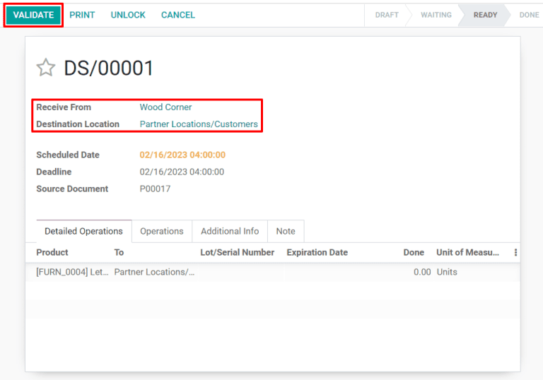

Uso de triangulación de envíos para enviar de proveedores a clientes¶
La triangulación de envíos es una estrategia de cumplimiento de pedidos que permite que los vendedores envíen artículos directo de los proveedores a los clientes. Por lo general, un vendedor le compra un producto a un proveedor, lo almacena en su inventario y lo envía al cliente final una vez que se realiza un pedido. Mediante la triangulación de envíos, el proveedor es responsable de almacenar y enviar el artículo. Esto beneficia al vendedor al reducir los costos de inventario, incluido el precio de los almacenes operativos.
Configurar productos para realizar una triangulación de envío¶
Para usar la triangulación como estrategia de cumplimiento, vaya a la aplicación y seleccione . En el encabezado Logística haga clic en la casilla Triangular y guarde para finalizar.
Luego, vaya a la aplicación , haga clic en y elija uno que ya existe o seleccione Nuevo para configurar uno. En la página del producto asegúrese de que las casillas Se puede vender y Se puede comprar están habilitadas.

Haga clic en la pestaña Compra y especifique un proveedor y el precio al que venden el producto. Puede agregar varios proveedores, pero el que se encuentre en la parte superior de la lista será el que se seleccione de forma automática para las órdenes de compra.

Por último, seleccione la pestaña Inventario y habilite la casilla Triangular en la sección Rutas.
Completar órdenes mediante el uso de triangulación de envíos¶
Cuando un cliente completa una compra en línea para un producto triangulado, se creará una orden de venta de forma automática con una solicitud de cotización asociada para el proveedor. Puede ver las órdenes de venta en la aplicación si selecciona . Haga clic en el botón inteligente Compra en la parte superior derecha de una orden de venta para ver la solicitud de cotización asociada.
Truco
Las órdenes de venta trianguladas también se pueden crear de forma manual en la aplicación . Seleccione y agregue un producto configurado para triangular.

Al confirmar la solicitud de cotización, esta se convierte en una orden de compra, se crea un recibo de triangulación y se vincula. El recibo se puede ver al hacer clic en el botón inteligente Recepción en la esquina superior derecha del formulario de la orden de compra.

El recibo de la triangulación mostrará al proveedor en la sección Recibir de y al cliente en la sección Ubicación de destino. Después de que el cliente reciba el producto, haga clic en el botón Validar en la parte superior izquierda del recibo de triangulación para confirmar la cantidad entregada.
Para ver todas las órdenes trianguladas, vaya al tablero de información general en y haga clic en el botón turquesa con el número por procesar en la tarjeta de triangulación.